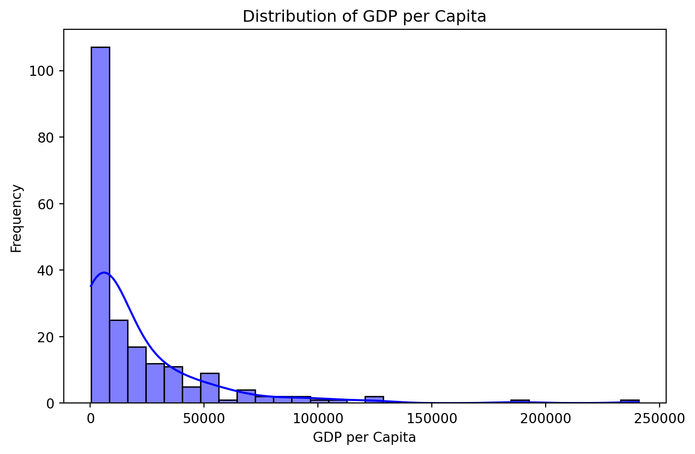
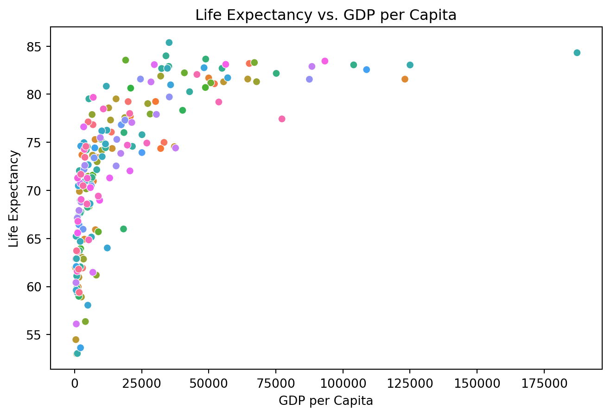
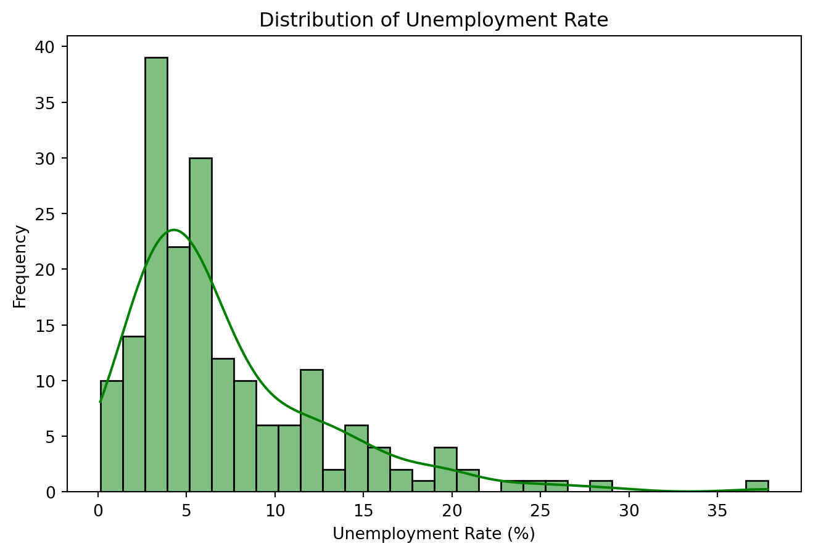

import pandas as pddf = pd.read_csv('wdi.csv')print(df.head())
country inflation_rate exports_gdp_share gdp_growth_rate \
0 Afghanistan NaN 18.380042 -6.240172
1 Albania 6.725203 37.395422 4.856402
2 Algeria 9.265516 31.446856 3.600000
3 American Samoa NaN 46.957520 1.735016
4 Andorra NaN NaN 9.563798
gdp_per_capita adult_literacy_rate primary_school_enrolment_rate \
0 352.603733 NaN NaN
1 6810.114041 98.5 95.606712
2 5023.252932 NaN 108.343933
3 19673.390102 NaN NaN
4 42350.697069 NaN 90.147346
education_expenditure_gdp_share measles_immunisation_rate \
0 NaN 68.0
1 2.74931 86.0
2 NaN 79.0
3 NaN NaN
4 2.66623 98.0
health_expenditure_gdp_share income_inequality unemployment_rate \
0 NaN NaN 14.100
1 NaN NaN 11.588
2 NaN NaN 12.437
3 NaN NaN NaN
4 NaN NaN NaN
life_expectancy total_population
0 62.879 41128771.0
1 76.833 2777689.0
2 77.129 44903225.0
3 NaN 44273.0
4 NaN 79824.0
The wdi.csv dataset was sourced from the World Development Indicators dataset. My analysis of this is further supported by the following datasets: the World Health OrganizationWorld Health Organization (2023), the International Monetary FundInternational Monetary Fund (2023).
/Users/yangziyu/opt/anaconda3/lib/python3.9/site-packages/IPython/core/formatters.py:343: FutureWarning:
In future versions `DataFrame.to_latex` is expected to utilise the base implementation of `Styler.to_latex` for formatting and rendering. The arguments signature may therefore change. It is recommended instead to use `DataFrame.style.to_latex` which also contains additional functionality.
gdp_per_capita
life_expectancy
unemployment_rate
count
203.000000
209.000000
186.000000
mean
20345.707649
72.416519
7.268661
std
31308.942225
7.713322
5.827726
min
259.025031
52.997000
0.130000
25%
2570.563284
66.782000
3.500750
50%
7587.588173
73.514634
5.537500
75%
25982.630050
78.475000
9.455250
max
240862.182448
85.377000
37.852000
Table (tbl:tab-summary-statistics?) summarizes the key statistics for GDP per capita, life expectancy, and unemployment rate.
The summary statistics of GDP per capita, life expectancy, and unemployment rate highlight significant disparities across countries. The GDP per capita has a wide range, from $259 to over $240,000, with an average of $20,345 and a high standard deviation of $31,309, indicating large economic inequality between countries. The 75th percentile is $25,982, showing that only 25% of countries have higher economic output per person.
Life expectancy is relatively more consistent, with an average of 72.42 years and a narrower range between 53 and 85 years. The median life expectancy is 73.51 years, suggesting that most countries fall within a typical range for longevity.
In contrast, the unemployment rate shows significant variation, with a mean of 7.27% and a standard deviation of 5.83%. The lowest unemployment rate is 0.13%, while the highest reaches 37.85%, reflecting considerable differences in labor market conditions. The 75th percentile is 9.46%, indicating that in 25% of countries, unemployment is a major issue.
Visualizations of Key Indicators
1. Bar Chart: GDP per Capita Across Countries
Below is a bar chart showing the GDP per capita for all countries.

Figure 1: Bar chart showing the GDP per capita for all countries. Data from WDI.
As shown in Figure Figure 1, the distribution of GDP per capita is heavily skewed to the right, with most countries having a relatively low GDP per capita. A few countries have very high GDP per capita values, as seen from the long tail of the distribution.
2. Scatterplot: Life Expectancy vs. GDP Per Capita
Below is a scatterplot showing the relationship between life expectancy and GDP per capita.

Figure 2: Scatter plot showing the relationship between life expectancy and GDP per capita. Data from WDI.
As shown in the Figure Figure 2, there is a positive correlation between life expectancy and GDP per capita. Countries with higher GDP per capita tend to have higher life expectancies. However, this relationship flattens as GDP per capita increases, suggesting diminishing returns on life expectancy beyond a certain level of GDP per capita, corresponding to the life expectancy level among developing states in the world today.
3. Barplot: Unemployment across countries
Below is a barplot showing the distribution of the unemployment rate of all countries.

Figure 3: Barplot showing the distribution of the unemployment rate of all countries. Data from WDI.
As shown in the Figure Figure 3, the unemployment rate distribution shows that most countries have an unemployment rate between 0% and 15%. A smaller number of countries have higher unemployment rates, with a few exceeding 25%. The data is right-skewed.
Below is a table that highlights some key statistics from my analysis on GDP per capita, life expectancy and unemployment.